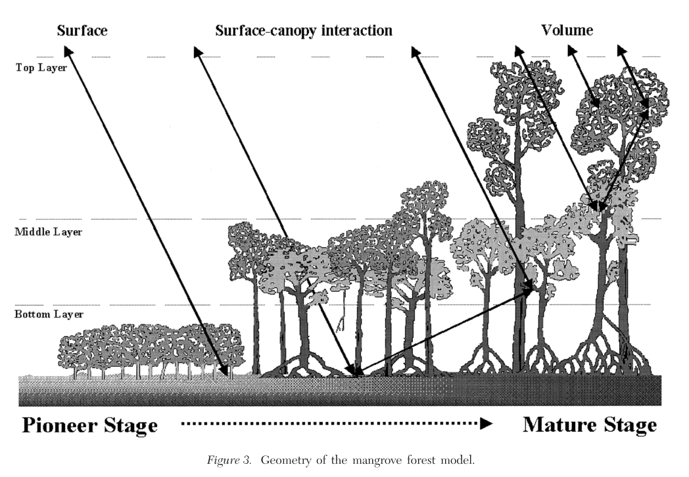
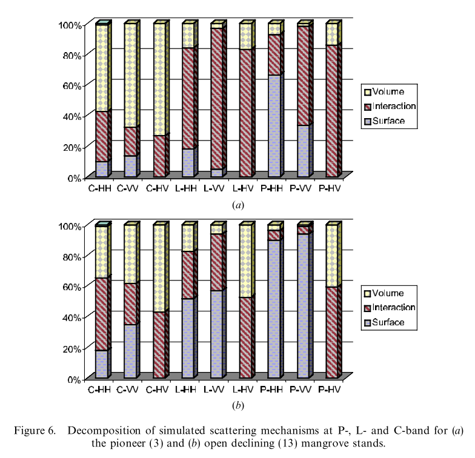

5.2 Vegetation
5.2.1 Ramsey, 1996
“Remote sensing of mangrove wetlands: Relating canopy spectra to site-specific data” (Ramsey and Jensen 1996)
Key significance: This is one of the earliest comprehensive attempts to relate multispectral wavelength data to mangrove forest structure characteristics. In particular, the study seeks out to answer two primary questions:
- What are the spectral and structural changes within and between mangrove species and community types?
- What are the relationships between the canopy spectral variability at the blue, green, red and NIR wavelength regions and canopy species composition and structural variability?
Their results largely showed that remote sensing of species composition is quite difficult (no relationships between species composition and spectral indices exist), but LAI and a few other parameters (canopy height) were found to be significantly correlated with some spectral bands/vegetation indices.
Research design: Field structure and species composition data was collected and coupled with remotely sensed spectral data. Regression and other statistical techniques were used to relate the data to the various spectral measures and their arithmetic transforms. Spectral measurements were taken in the lab, from a helicopter platform, and also from SPOT satellite.
Key notes & results: The following results and key conclusion of the study should be noted:
- LAI was calculated as a transform of canopy closure, which was collected with a hemispherical mirror
- Significant correlations of any of the bands with percent species composition was not significant
- The strongest correlations between spectral signatures and forest structure data was with LAI
- LAI was not significantly correlated with species composition, but was significantly correlated with forest height, which indicates that canopy depth expands with increasing canopy height.
5.2.2 Green, 1998
“Remote sensing techniques for mangrove mapping” (Green et al. 1998)
Key significance: The study reviews common methods of remote sensing for mangrove mapping, with a particular emphasis on the fact that accuracy assessments are rarely performed following classification of RS mangrove imagery. The authors then couple the most commonly used techniques with accuracy assessments using field-based data to examine the relative strengths & weaknesses of the different techniques.
Research design: The study employs three spectral image datasets (Landsat 6 TM, SPOT, and Airborne multispectral data at 1 m resolution) for generating of RS imagery of mangroves in the Turks and Caicos Islands. The review of classificatin of spectral imagery for mangroves identifies 5 different methodologies:
- Visual interpretation - the user classifies areas, though often with a radiometric enhancement applied to the imagery
- Vegetation index - different vegetation indices can be employed such as ratio indices (NDVI) or orthogonal indices (tasseled cap transformations); this study uses NDVI with a ISODATA clustering algorithm producing 50 classes that are identified and edited to match mangroves
- Unsupervised classification - may or may not involve image enhancement; this study used ISODATA clustering algo on unenhanced imagery
- Supervised classification - most common method of mangrove classification and may or may not include image enhancement (e.g., enhancing edges between stands or species types); this study uses 3 x 3 edge enhancement filter applied to imagery, useful in mangroves given linear nature
- PCA and band ratios - ratios of different bands can be effective in distinguishing different landscape features; this study uses the ratios of various Landsat and SPOT bands, runs PCA, and then generates an image based on the most significant PCAs (which they then classify)
Accuracy assessment was performed using three metrics (following Congalton, 1991):
- Overall accuracy - overall agreement as sum of correctly labelled sites divided by total number of sites
- User accuracy - probability that a classified pixel actually represents that category on the ground [3. Producer accuracy - how often real features on ground are shown correctly on the map; NOT used in this study]
- Tau coefficient - indicates the percent of pixels classified correctly than would be expected by chance alone
Key results:
The authors largely justify the work based on:
- A lack of widespread accuracy assessments within the literature
- A discussion of the limitations of climate on spectral RS imagery classification (although their methods only examine spectral datasets; they give SAR a head nod in the review section)
Discrimination of mangrove vs. non-mangrove vegetation:
SPOT XS imagery was not effective at producing accurate classifications of mangrove extent. CASI (airborne) data was highly effective at identifying mangrove vegetation (with all five methods producing overall accuracies greater than 50%), whereas methods performed on Landsat data improved markedly with increased computational sophistication (i.e., method 5).
Accurate classification of Landsat data required the calculation of PCs and band ratios, rather than processing of just raw band data.
In general, visual identification and ratio index based classifications are not effective at classifying mangroves.
Additionally, merging of Landsat TM and SPOT XP (i.e., down-sampling Landsat data) was found to be effective at improving mapping classifications (using both a principle components merge, as well as an intensity-hue-saturation merge).
Discrimination of mangrove habitats:
The results show that the airborne spectral data (CASI) was most effective at accurately classifying 9 different mangrove classes. Reasonable classification accuracies could be achieved with the Landsat data for a reworking of just three mangrove classes (tall Rhizophora, other mangrove, and non-mangrove), but were highly inaccurate for a 9-class map.
Note: There is a nice table of other works on mangrove mapping and remote sensing in the introduction. It may be good to review this table again at a later date.
5.2.3 Proisy, 2000
“Interpretation of polarimetric radar signatures of mangrove forests” (Proisy et al. 2000)
Key contribution: This study reviews the interaction of backscattering signals of different polarizations of SAR data with components of a mangrove forest.
Research design: The study took field-based data on forest structure and species composition, as well as collected data from the P-, L-, and C-Bands of AIRSAR data (NASA JPL; airborne SAR). The calculated a number of backscattering coefficients for each of the polarizations (HH, VV and HV), as well as the copolarization ratio (VV/HH) as well as two cross-polarization ratios (HH/HV and VV/HV).
The different bands were acquired a mean incidence angle of 35 degrees at:
- P-band: 0.44 GHz
- L-band: 1.25 GHz
- C-band: 5.3 GHz
Key findings:
Within the L-band, surface scattering or double-bounce effects dominate up until approximately 150-200 Mg/ha, whereas volume scattering (i.e., within the canopy) dominates for biomass values greater than 150-200 Mg/ha.
The dominant contributer to the backscattering coefficient depends on the type of forest being monitored. For example:
- Mature or declining stands with biomass greater than 300 Mg/ha have volume scatter at all frequencies.
- Mature or declining stands with biomass between 100 - 300 Mg/ha have dominant volume scattering at C-band, volume and double-bounce scattering at L-band, and double-bounce scattering at P-band
- Pioneer stages with less than 100 Mg/ha biomass have volume scattering present in all three polarizations of C-band, double-bounce or surface scattering at L-band, and all three present (though interaction term is strongest) at the L-band for all three polarizations.
Overall, P-band provides most pronounced polarimetric signatures, and is the most useful for distinguishing between different scattering mechanisms and thus different forest stages.
A nice summary figure of the interactions between forest structure and radar returns is below:

Notes: Prior studies have found that there is a strong positive relation between SAR backscattering coefficients and total biomass, particularly for P-HV and L-HV.
The main contributions to the total backscattering coefficient response are i) the soil scattering component, ii) the volume scattering component, and iii) the double-bounce scattering component.
5.2.4 Proisy, 2002
“On the influence of canopy structure on the radar backscattering mangrove forests” (Proisy et al. 2002)
Key significance: One of a series of studies by Proisy et al, this particular study examines two mangrove forest stands of near identical aboveground biomass, but markedly different forest structure. They examine the polarimetric SAR data that they collect from the two plots, and examine them in relation to the two different forest structures.
The forest structures both contain ~75 Mg biomass/ha, but are structured as:
- A pioneer stand of L. racemosa that is extremely dense (~12,000 trees/ha) and has much higher basal area (21.0 m2/ha)
- A declining stand with two canopy strata:
- A. germinans that are dying off and form an open, tall canopy (250 trees/ha, 4.2 m2/ha & 19 m height)
- R. mangle that are replacing the A. germinans (31 trees/ha, 0.2 m2/ha & 8 m height)
Research design: The same research methods as (Proisy et al. 2000) (see Section 5.2.3) were employed, but this particular study focused on an in-depth comparison of two plots with similar aboveground biomass values, but markedly different forest structure characteristics.
Key results:
Overall, the backscattering from the open stand was higher than that of the closed (pioneer) stand.
With the help of a polarimetric scattering model, they found that the three primary contributers to backscattering (volume vs. interaction vs. surface scattering) differed between the two stands for select polarizations.
Additionally, they note two key concluding remarks:
- Use of correlation backscatter to biomass relationships should be restricted to homogeneous closed canopies.
- Distinguishing between stands of different developmental status should be possible via differences in backscaterring coefficients of the different SAR bands and polarizations
A key figure that shows some of these differences is shown below:

5.2.5 Mutanga, 2004
“Narrow band vegetation indices solve the saturation problem in biomass estimation” (Mutanga and Skidmore 2004)
Key significance: This study addresses the issue of vegetation index saturation at high biomass levels, and examines the effectiveness of hyperspectral data for resolving the issue.
The study is largely motivated given that the “major limitation of using vegetation indices is asymptotic approach of a saturation level after a certain biomass density or LAI”
Red edge - The rise of reflectance at the boundary between chlorophyll absorption in red wavelengths and leaf scattering in NIR wavelengths (680-750 nm).
Red edge position can be defined as the point of maximum slope on the red infrared curve, and can be calculated by identifying the maximum of the first derivative
Research design: The study primarily focuses on two approaches to resolving the saturation issue with biomass and vegetation indices:
- Use of narrow band vegetation indices, which are simply NDVI, Simple Ratio (SR) and Transformed Vegetation Index (TVI), but for 637 bands of hyperspectral data (350-2500 nm)
- Use of the red edge position
A grass was grown in a greenhouse with two different nitrogen treatments (and one control group), and hyperspectral signatures were repeatedly taken. The various indices are computed for narrow band vegetation indices as well as indices using the red edge position.
Key results:
NDVI - The results clearly indicate an improvement in a relationship between biomass and an NDVI index derived from red edge spectral bands rather than standard (NIR and red) bands.
SR - The results from the SR tests are similar to that of NDVI; reconstruction of SR using all possible hyperspectral band combinations indicates that bands from the red edge portion are most sensitive to changes in biomass
TVI - Although distribution of the R2 values for reconstruction of this index differed visually from that of NDVI and SR (which were quite similar), the most efficient TVI was found to be constructed from bands in the red edge portion of the spectrum.
The green portion of the spectrum also did well (e.g., second “best”) in reconstructing the vegetation indices.
Red edge position - The red edge position was found to have a high correlation coefficient with biomass, indicating there is a significant correlation
Of the three vegetation indices, SR was found to have the strongest correlation with biomass. Thus, narrow band derivations of SR from the red edge portion of the wavelength spectrum may be most efficient in estimating biomass from spectral data.
5.2.6 Wang, 2004a
“Comparison of IKONOS and QuickBird images for mapping mangrove species on the Caribbean coast of Panama” (Wang et al. 2004)
5.2.7 Wang, 2004b
“Integration of object-based and pixel-based classification for mapping mangroves with IKONOS imagery” (Wang, Sousa, and Gong 2004)
5.2.8 Vaiphasa, 2005
“Tropical mangrove species discrimination using hyperspectral data: A laboratory study” (Vaiphasa et al. 2005)
5.2.9 Vaiphasa, 2006
“A post-classified for mangrove mapping using ecological data” (Vaiphasa, Skidmore, and Boer 2006)
5.2.10 Dronova, 2012
“Landscape analysis of wetland plant functional types: The effects of image segmentation scale, vegetation classes and classification methods” (Dronova et al. 2012)
5.2.11 Giri et al, 2014
“A study on abundance and distribution of mangrove species in Indian Sundarban using remote sensing technique” (Giri et al. 2014)
References
Ramsey, Elijah W, and John R Jensen. 1996. “Remote Sensing of Mangrove Wetlands: Relating Canopy Spectra to Site-Specific Data.” Photogrammetric Engineering and Remote Sensing 62 (8): 939–48.
Green, Edmund P, Christopher D Clark, Peter J Mumby, Alasdair J Edwards, and AC Ellis. 1998. “Remote Sensing Techniques for Mangrove Mapping.” International Journal of Remote Sensing 19 (5): 935–56. doi:10.1080/014311698215801.
Proisy, C, E Mougin, F Fromard, and MA Karam. 2000. “Interpretation of Polarimetric Radar Signatures of Mangrove Forests.” Remote Sensing of Environment 71 (1): 56–66. doi:10.1016/S0034-4257(99)00064-4.
Proisy, C, E Mougin, F Fromard, V Trichon, and MA Karam. 2002. “On the Influence of Canopy Structure on the Radar Backscattering of Mangrove Forests.” International Journal of Remote Sensing 23 (20): 4197–4210. doi:10.1080/01431160110107725.
Mutanga, Onisimo, and Andrew K Skidmore. 2004. “Narrow Band Vegetation Indices Overcome the Saturation Problem in Biomass Estimation.” International Journal of Remote Sensing 25 (19): 3999–4014. doi:10.1080/01431160310001654923.
Wang, Le, Wayne P Sousa, Peng Gong, and Gregory S Biging. 2004. “Comparison of Ikonos and Quickbird Images for Mapping Mangrove Species on the Caribbean Coast of Panama.” Remote Sensing of Environment 91 (3): 432–40. doi:10.1016/j.rse.2004.04.005.
Wang, L, WP Sousa, and P Gong. 2004. “Integration of Object-Based and Pixel-Based Classification for Mapping Mangroves with Ikonos Imagery.” International Journal of Remote Sensing 25 (24): 5655–68. doi:10.1080/014311602331291215.
Vaiphasa, Chaichoke, Suwit Ongsomwang, Tanasak Vaiphasa, and Andrew K Skidmore. 2005. “Tropical Mangrove Species Discrimination Using Hyperspectral Data: A Laboratory Study.” Estuarine, Coastal and Shelf Science 65 (1): 371–79. doi:10.1016/j.ecss.2005.06.014.
Vaiphasa, Chaichoke, Andrew K Skidmore, and Willem F de Boer. 2006. “A Post-Classifier for Mangrove Mapping Using Ecological Data.” ISPRS Journal of Photogrammetry and Remote Sensing 61 (1): 1–10. doi:10.1016/j.isprsjprs.2006.05.005.
Dronova, Iryna, Peng Gong, Nicholas E Clinton, Lin Wang, Wei Fu, Shuhua Qi, and Ying Liu. 2012. “Landscape Analysis of Wetland Plant Functional Types: The Effects of Image Segmentation Scale, Vegetation Classes and Classification Methods.” Remote Sensing of Environment 127: 357–69. doi:10.1016/j.rse.2012.09.018.
Giri, Sandip, Anirban Mukhopadhyay, Sugata Hazra, Sandip Mukherjee, Deborupa Roy, Subhajit Ghosh, Tuhin Ghosh, and Debasish Mitra. 2014. “A Study on Abundance and Distribution of Mangrove Species in Indian Sundarban Using Remote Sensing Technique.” Journal of Coastal Conservation 18 (4): 359–67. doi:10.1007/s11852-014-0322-3.